What are Policy Gradient Methods?
Policy gradient methods are a subclass of policy-based methods. In the previous section, we learned about policy-based methods.
Policy-based methods are a class of algorithms that search directly for the optimal policy without simultaneously maintaining value function estimates. We learned how to represent the policy as a neural network, and in that setting, the agent's goal is to find the best ways to maximize expected return.
Policy gradient methods are a subclass of policy-based methods that estimate the weights of an optimal policy through gradient ascent. Here, we'll learn about the theory behind this before training our agent with the policy gradient method.
For now, to set the stage, we'll explore an example that will help us understand how these methods work. So, first, remember the cartpole example. This is a classic benchmark task where the goal is to balance a pole on a moving cart.
To solve it, we can represent the policy with neural network that takes the states as input. As output, it returns the probability of each potential action and then the agent can sample from those probabilities to select an action.
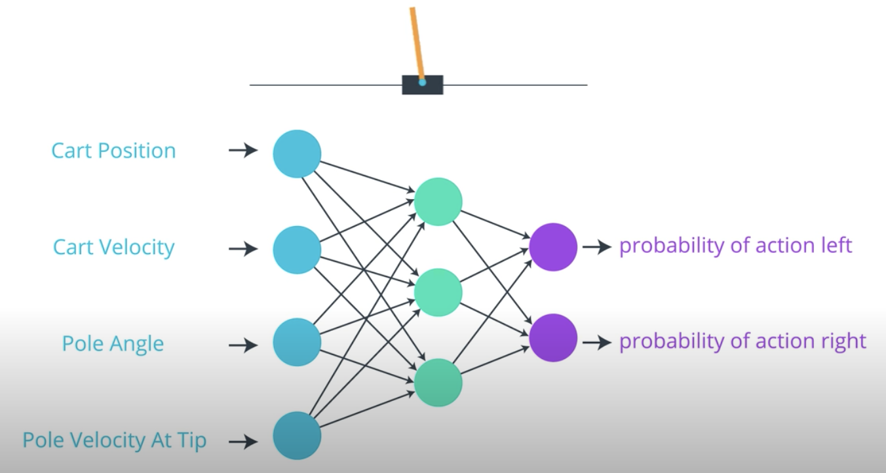
Now, let's consider a much more challenging task where the goal is to teach a chicken to cross a road. At each time step, our chicken agent can move up, down, left, or right, and the goal is to get there safely. So, we have to avoid getting hit by a car or truck. Say, there's a time limit of 5 seconds, and if we make it safely to the other side in time, we win, otherwise, we lose.
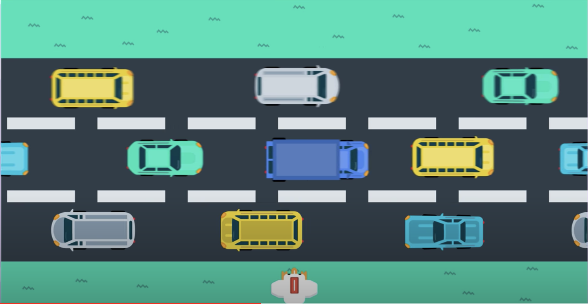
Just as in cartpole example, we can represent the agent's policy with a neural network. It takes the game states as input and returns the probability that the chicken selects each possible action. In this case, the output layer will have 4 nodes because there are 4 possible actions.
Now, we are training our agent to learn from raw pixels, probably, a convolutional neural network is the best bet. Basically, that would provide the state of the game as input to a neural network. As output, the network will return action probabilities. Our goal is to find the weights of the neural network that yield the optimal policy.
We begin with an initially random set of weights and use the corresponding policy to interact with the environment. So, for instance, say the agent plays the game for a single round or episode and ends up making it to the other side safely and within the time limit.
But then, when it plays the game for another episode, it chooses an unwise series of actions that leads to it losing the round. Then, in order to to teach the agent to win, we'll give a reward of +1 if it won and -1 if it lost and see that reward is only delivered at the end of the game.
Now, so far, everything we've discussed is along the lines of what we did in the previous lesson when we talked about several policy-based methods. The difference, which we'll talk about in the next part.
See the video here.
In the Introduction to Policy-Based Methods lesson, you learned about many policy-based methods that could approximate either a deterministic or stochastic policy.
In this lesson, we'll confine our attention to stochastic policies.
The Big Picture
Continuing on chicken game from last section, say, the reward is delivered only at the end of the game and is +1 if the agent wins and -1 if the agents loses. So, how can we use this information to improve the network weights to get us closer to the optimal policy?
For now, say that we collected a single episode for the agent one. Well, the policy gradient method that we'll discuss in this lesson. We'll look at each state action pair separately, beginning with the first one, and we'll recall how the agent ultimately selected action left from the state. It just passed that through the network which return action probabilities. The agent then sampled from those probabilities which ultimately led to selecting action left.
So the idea is this, since the agent won the game, that's an indication that it was a good decision to select action left when in this game state. So, we can change the network weights just a little bit to make it even more likely to select action left from that game state in the future. Then, we move on to the next state action pair and look at the probabilities that lead to selecting action up, and we amend the network weights again, just a little to make it slightly more likely to select action up from the corresponding game state.
Once, we've done all of those updates for every state action pair in the episode, we can collect another episode. Say, in the second episode we lost. We'll again consider each of the state action pairs one at a time abd begin with the first one. Say, the action probabilities corresponding to the state are given here (left -> 0.3, right -> 0.2, up -> 0.3, down -> 0.2). Then, it makes sense that since this choice to select action up was part of an episode where we eventually lost the game, we'll amend the network weights to now put less probability on that action. We'll do the same for all other state action pairs in the episode where we want to amend the network to make it less likely to repeat these bad decisions in the future.
We'll continue with collecting more episodes and making these modifications to the network. But, that's it. In this lesson, we'll dig more deeply into this process but it's useful to keep the big picture in mind. We just collect a lot of episodes and then for each episode we amend the network weights to make all the state action pairs more likely if we won the game, and to make them all less likely if we lost the game. This method isn't perfect but it's a start. Later, we'll learn about some ways to improve it.
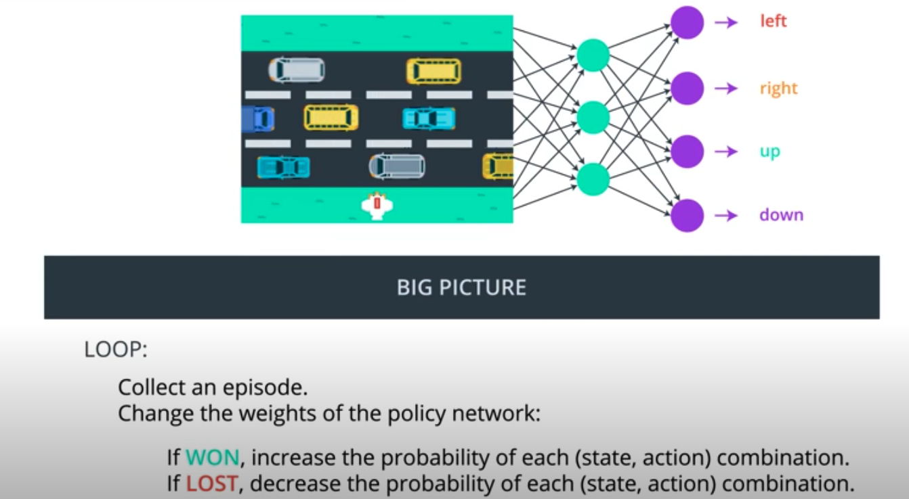
See the video here.
Connections to Supervised Learning
Policy gradient methods are very similar to supervised learning.
Before moving on, let's talk a little bit more about what we just did and how it's related to supervised learning. As we discussed in the previous section, we begin by playing the game for an episode. If we make it to the other end of the street safely and in time, then we win the game. Then, for each state action pair in the episode, we modify the network just a little bit to make it slightly more likely to select that action when it encounters the corresponding state.
The idea is that if we won, those must have been good actions to select from their corresponding states. So, let's modify the network to reflect that by making it more likely to experience like gameplay in the future.
So, remember how we use supervised learning for image classification. We have a data set of images along with their corresponding labels. And if we want to train a neural network to predict the label corresponding to any image. What we do is pass that image through the network to get a prediction. If the prediction is incorrect, we change the network weights just a little bit so that the prediction is slightly more correct. And if it's correct, we also nudge the weights again just a little bit, so that the network is more certain of the correct label. And we just loop over the dataset until eventually the neural network gets as close as possible to give us accurate predictions for each image.
Now, this is really similar to what we described with RL. Namely, each has a dataset of input output pairs that we'll use to train the corresponding networks. One important difference is that when we do image classification. Typically, we work with the dataset that doesn't change over time. So for instance, we download the ImageNet dataset once and then we just pull random batches to train the network.
However, in this RL setting, the dataset varies by episode, so we use the policy to collect an episode, that gives us a dataset or a bunch of matched state action pairs, and then we use that dataset once to do a batch of updates.
After those updates are done, we'll discard the dataset and then collect another episode which gives us another dataset and so on.
So the dataset changes pretty frequently. And furthermore, it's highly likely that we will experience a situation where the dataset has multiple conflicting opinions about what the best output should be for an input or in other words, what the best action is to take from a game state.
The equivalent for image classification would be if the same image appeared twice in the dataset, where one entry said the image was of a dog and the other entry said the image contained a cat. This is something that we won't encounter with image classification, and it does make our current situation more complex.
See the video here.
(Optional) Learn More
To further explore the connections between policy gradient methods and supervised learning, you're encouraged to check out Andrej Karpathy's famous blog post.
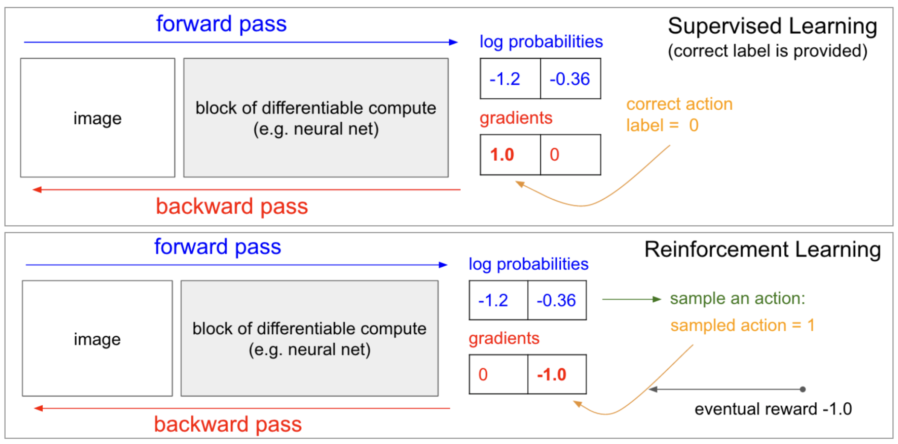
Learn more about the connections between supervised learning and reinforcement learning. (Source)
Problem Setup
We're now ready to get started with rigorously defining how policy gradient methods will work. Now that we have the big picture of how the policy gradient method will work, we're ready to get more specific.
We'll build slowly and carefully, and I strongly encourage you to keep the big picture in mind as the mathematical details unfold.
The first thing we need to define is a Trajectory. A Trajectory is just a state action sequence. You can start to think of it as just a fancy way of referring to an episode where we don't keep track of the rewards. But actually, a Trajectory is a little bit more flexible because there are no restrictions on its length. So, it can correspond to a full episode or just a small part of an episode.
We denote the length with a capital , where
stands for Horizon. We denote a Trajectory with
.
Then, the sum reward from that Trajectory is written as .
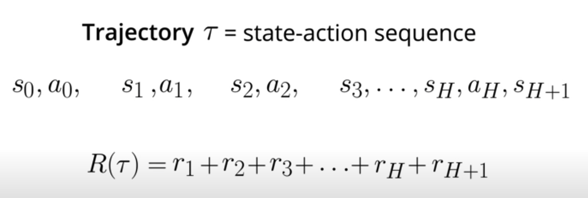
Our goal in this lesson is the same as in the previous lesson. We want to find the weights of the neural network that maximize expected return.
One way of accomplishing this is by setting the weights of the neural network so that on average, the agent experiences trajectories that yield high return. We denote the expected return by , and note that
is a function of
. We want to find the value for
that maximizes
.
is defined in the expression below.
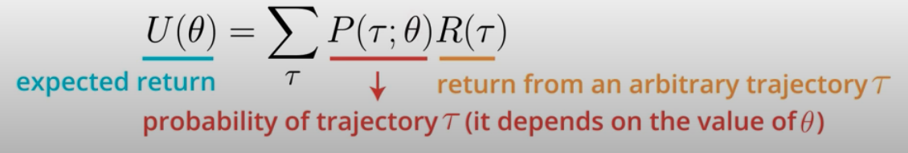
To understand it, we'll look at each part separately.
- First, recall that this
is just the return corresponding to an arbitrary Trajectory tab.
- So then, to take this quantity and use it to calculate the expected return,
we need only take into account the probability of each possible trajectory. - That probability depends on the weights
in the neural network. This is because
- We use this notation with a semicolon only to indicate that
- In the upcoming concepts, we work directly with this formula as we explore the details behind the policy gradients method.
Important Note
Before moving on, make sure it's clear to you that the equation discussed in the video (and shown below) calculates an expectation.
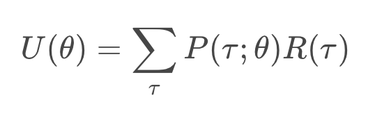
To see how it corresponds to the expected return, note that we've expressed the return as a function of the trajectory
. Then, we calculate the weighted average (where the weights are given by
) of all possible values that the return
can take.
Why Trajectories?
You may be wondering: why are we using trajectories instead of episodes? The answer is that maximizing expected return over trajectories (instead of episodes) lets us search for optimal policies for both episodic and continuing tasks!
That said, for many episodic tasks, it often makes sense to just use the full episode. In particular, for the case of the video game example described in the lessons, reward is only delivered at the end of the episode. In this case, in order to estimate the expected return, the trajectory should correspond to the full episode; otherwise, we don't have enough reward information to meaningfully estimate the expected return.
REINFORCE
You've learned that our goal is to find the values of the weights in the neural network that maximize the expected return
where is an arbitrary trajectory. One way to determine the value of
that maximizes this function is through gradient ascent. This algorithm is closely related to gradient descent, where the differences are that:
- gradient descent is designed to find the minimum of a function, whereas gradient ascent will find the maximum, and
- gradient descent steps in the direction of the negative gradient, whereas gradient ascent steps in the direction of the gradient.
Our update step for gradient ascent appears as follows:
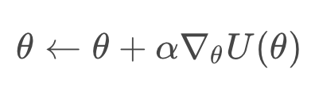
where is the step size that is generally allowed to decay over time. Once we know how to calculate or estimate this gradient, we can repeatedly apply this update step, in the hopes that
converges to the value that maximizes
.
For more complete explanation watch this video.
Pseudocode
The algorithm described in the video is known as REINFORCE. The pseudocode is summarized below.
- Use the policy
to collect
trajectories
with horizon
. We refer to the
-th trajectory as
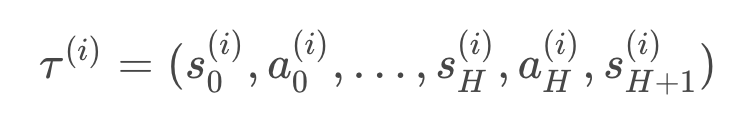
- Use the trajectories to estimate the gradient
:
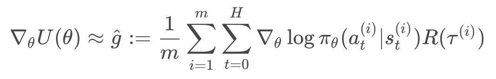
- Update the weights of the policy:
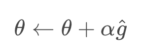
- Loop over steps 1-3.
(Optional) Derivation
If you'd like to learn how to derive the equation that we use to approximate the gradient, please read the text below. Specifically, you'll learn how to derive
Likelihood Ratio Policy Gradient
We'll begin by exploring how to calculate the gradient . The calculation proceeds as follows:
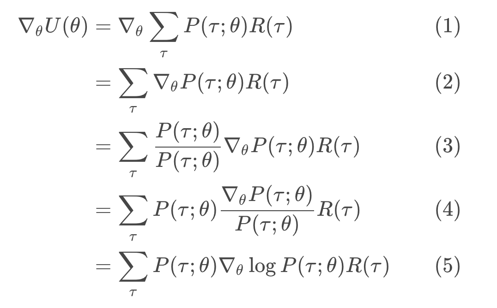
First, we note line (1) follows directly from
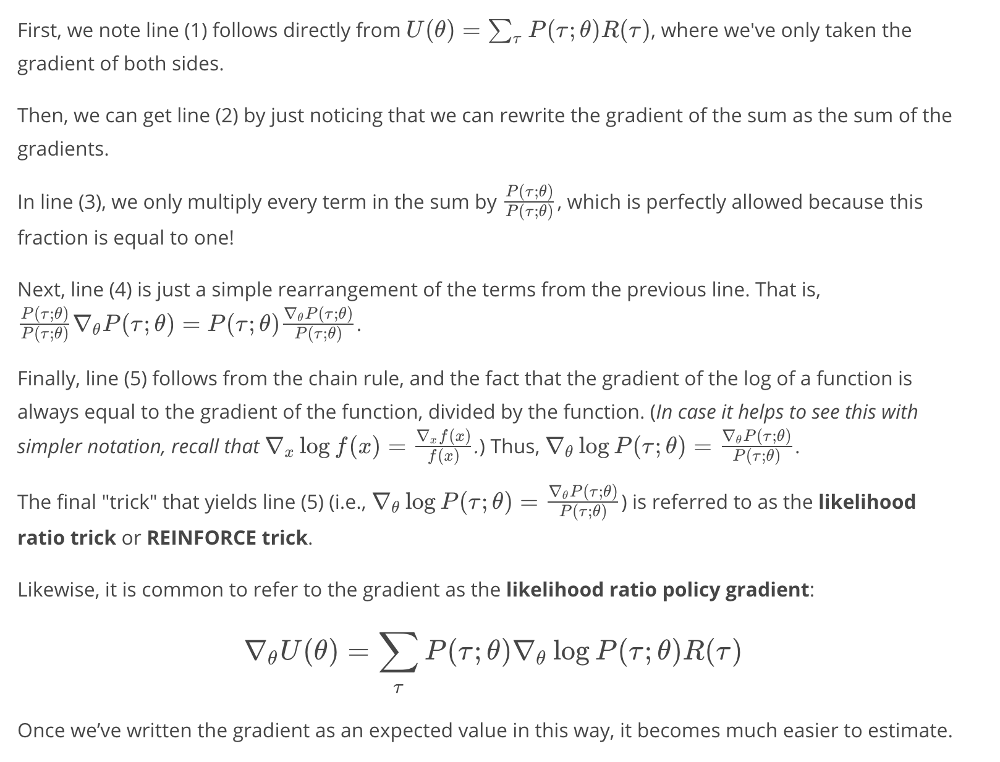
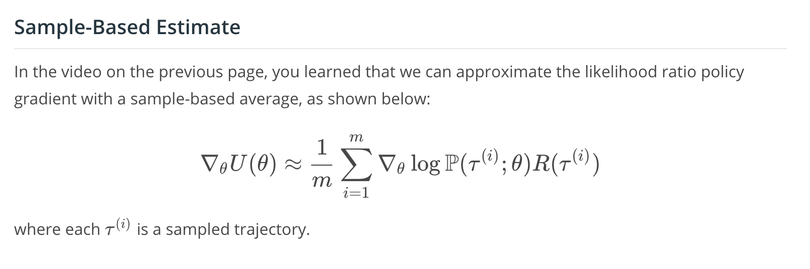
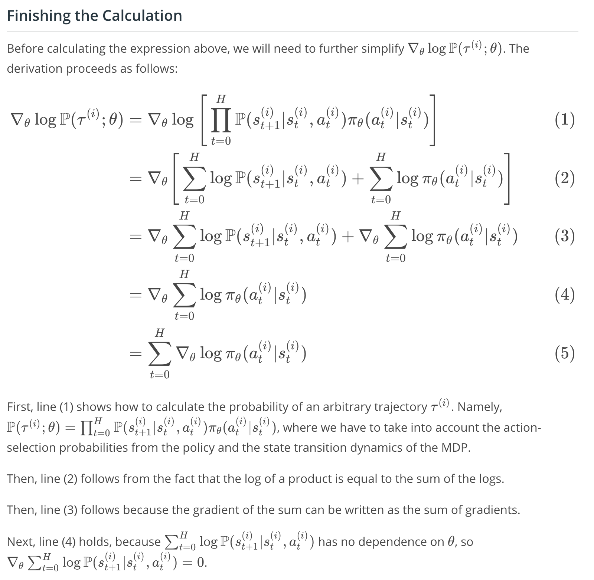
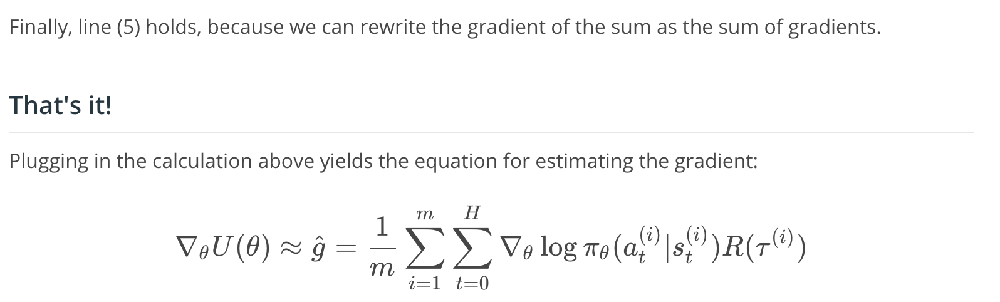
Coding Exercise
In this exercise, you will use an implementation of REINFORCE to solve OpenAI Gym's CartPole environment.
Note: In the implementation, each trajectory corresponds to a full episode, and we collect m=1 trajectories. You're strongly encouraged to refer to the pseudocode for REINFORCE while perusing the implementation.
Later, you will learn about some modifications that you can use to improve this algorithm. You're strongly encouraged to implement these modifications, to get better performance!
The code is here
What's Next?
In this lesson, you've learned all about the REINFORCE algorithm, which was illustrated with a toy environment with a discrete action space. But it's also important to mention that REINFORCE can also be used to solve environments with continuous action spaces!
For an environment with a continuous action space, the corresponding policy network could have an output layer that parametrizes a continuous probability distribution.
For instance, assume the output layer returns the mean and variance
of a normal distribution.

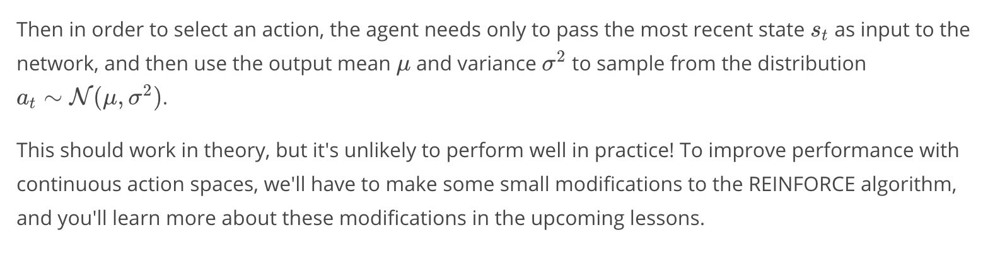
Summary

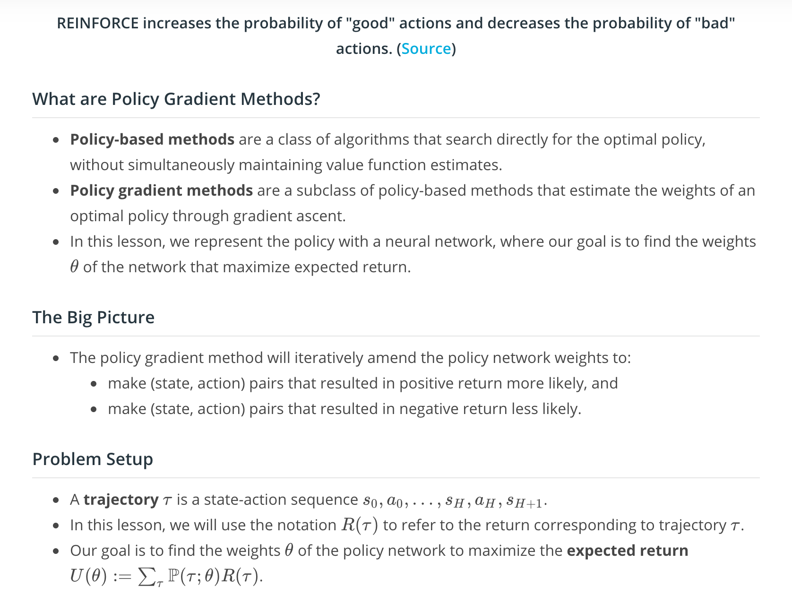
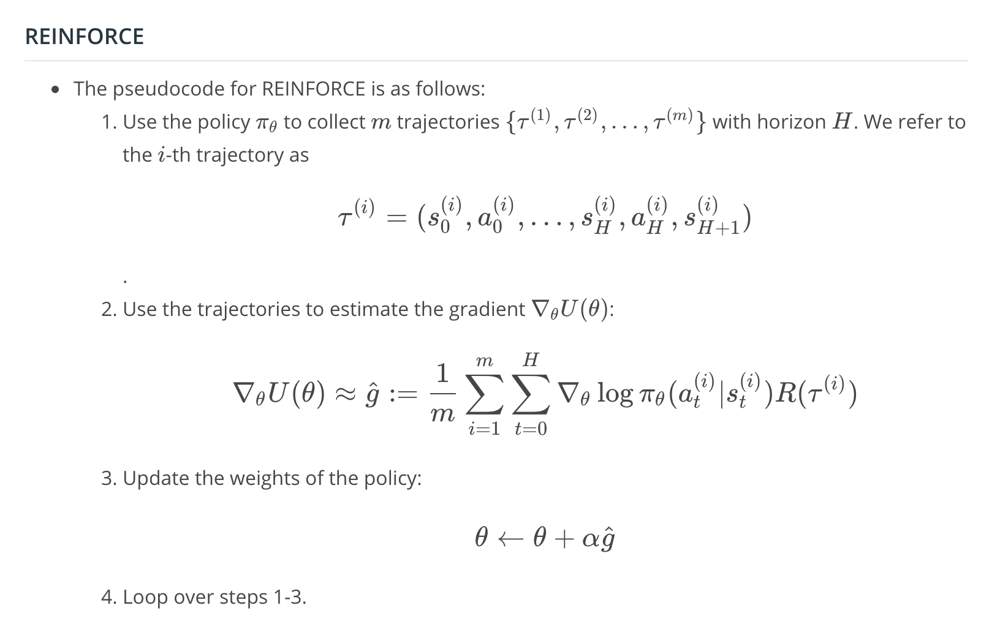
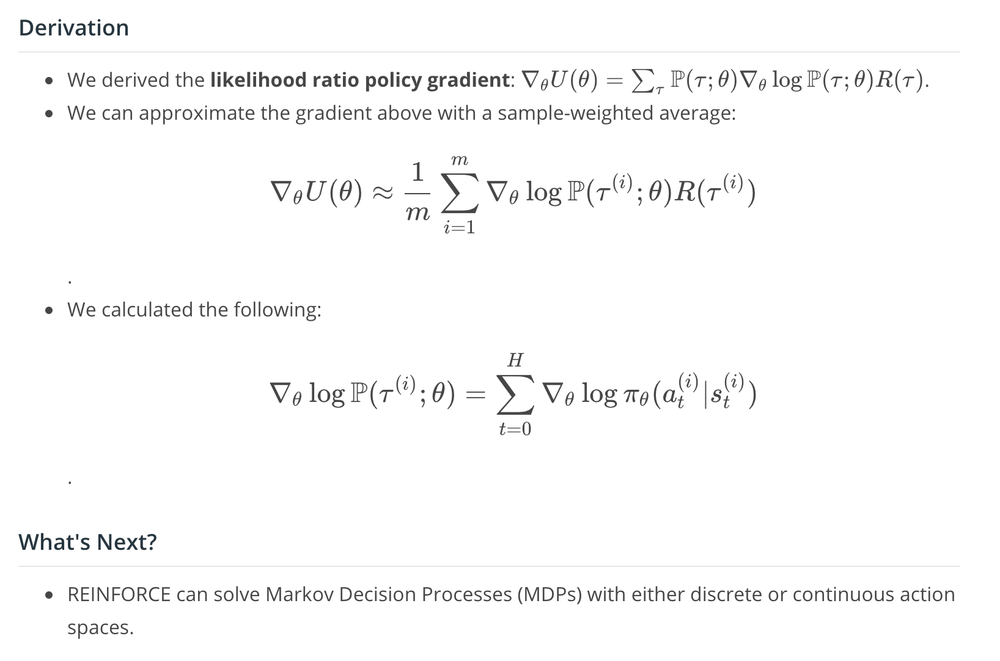